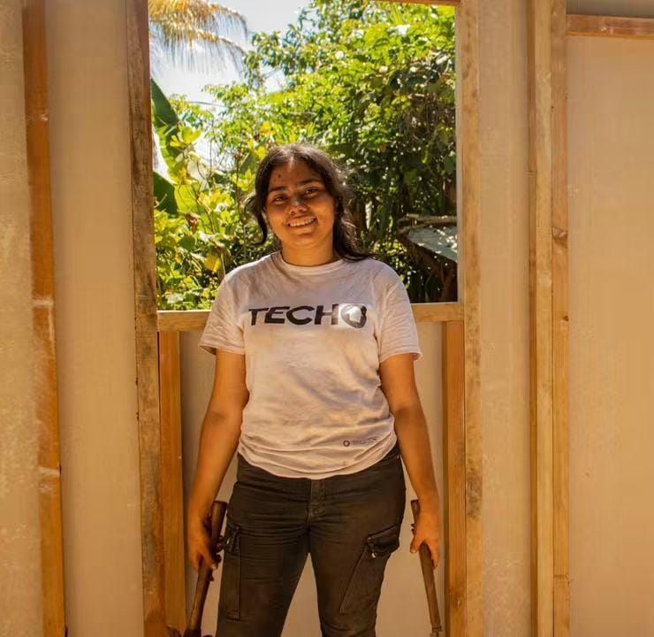

Vero ♡
Estudiante de Ingeniería de Software y Negocios Digitales. Apasionada por la tecnología, la creatividad y las buenas historias.
🌹

Soy una persona perseverante, entusiasta y resiliente. Me gusta aprender cosas nuevas, trabajar en equipo y siempre busco dar lo mejor de mí en todo lo que hago.
Actualmente estudio en ESEN y me estoy formando para convertirme en una profesional que pueda aportar y generar un impacto positivo en mi comunidad y en el mundo.
💻
Tecnología
🎨
Dibujo
⚒
Voluntariado
📖
Lectura
✈
Viajes